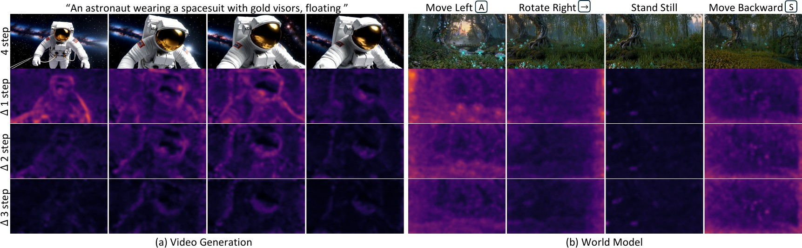
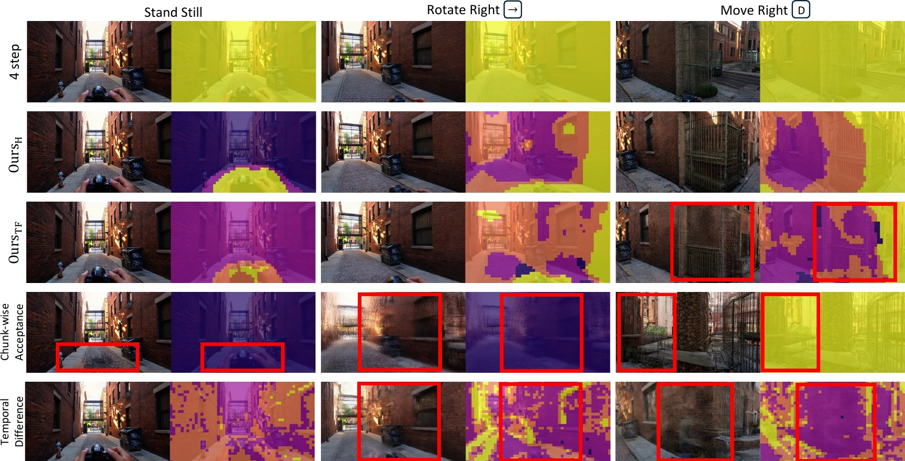

Does every token need to be denoised until the final step? Speculative Forcing treats intermediate estimates as drafts, accepts the tokens that have already converged, and keeps denoising only the rest. It keeps four-step quality with about 1.7 steps per token on LongLive and runs over 1.5× faster.
On 5-second videos with LongLive, both verifiers keep the VBench total of the four-step generator while using fewer than 1.7 denoising steps per token on average.
The score axis starts at 82. The 1-step score of 79.06 is below the plotted range.
On 30-second videos, the learned verifier keeps the quality and consistency of the four-step generator at about 1.7 steps per token. Drift, the variation of imaging quality over the rollout, is also lower than with four-step sampling.
The score axis starts at 82.2. The 1-step score of 80.82 is below the plotted range.
The 1-step Drift of 2.930 is above the plotted range.
On Lingbot-World 2.0, camera control keeps revealing new content, so more tokens need the full schedule. Speculative Forcing still keeps the quality of the four-step generator with about 2.5 steps per token, with lower Drift and comparable camera-pose error.
The score axis starts at 81.5. The 1-step score of 77.19 is below the plotted range.
The 1-step Drift of 5.579 is above the plotted range.
Few-step autoregressive generators run every token through the full denoising schedule. Many tokens already match their full-step output after the first steps, while others keep changing until the end. Speculative Forcing lets each token stop at its own step, without changing the generator’s weights.

All ablations use the world generation benchmark on Lingbot-World 2.0, where intermediate distortions are most pronounced.

One test-time tolerance ε trades speed against quality without retraining. With ε between 0.20 and 0.24 the sampler keeps the quality of four-step sampling and reaches the lowest Drift.
Mean steps is the measured average number of denoising passes per token. Throughput is measured on a single NVIDIA H100. Bold marks the best value in each column.
5-second videos with LongLive, standard 16-dimension VBench protocol. Both verifiers keep the four-step total with fewer than 1.7 steps per token.
30-second videos with LongLive, evaluated with VBench-Long. Drift measures the variation of imaging quality across the rollout, lower is better.
World generation with Lingbot-World 2.0 on 200 held-out navigation scenes. RPE is the relative pose error of the camera trajectory. Quality aggregates the six VBench dimensions.
Lingbot-World 2.0, every method calibrated at ε = 0.24 to a similar mean number of steps. Channel variance and temporal difference are selection signals adapted from prior work. Chunk-wise acceptance uses our learned verifier but commits whole chunks. The oracle runs every step to measure the true gap and reports no throughput.
Few-step autoregressive video generators enable streaming generation, yet they run every token through the final denoising step, regardless of how much refinement it needs. We find this uniform computation is often unnecessary: many tokens already closely match their eventual full-step outputs in the initial steps, while others require refinement until the end. We introduce Speculative Forcing, a framework that treats intermediate clean estimates as drafts and predicts when individual tokens can be safely accepted early. Once accepted, a token is frozen as its final output and undergoes no further denoising, while its cached keys and values remain available as context for the remaining tokens. We explore two alternative verifier designs: a training-free one based on similarity to clean content and stability across steps, and a learned one that reads the frozen generator’s intermediate features to estimate each token’s remaining gap to its full-step output. Across short-video, long-video, and world generation, Speculative Forcing preserves the quality of full-step sampling while substantially reducing computation. On LongLive, it matches the four-step generator with ∼1.7 denoising steps per token, running over 1.5× faster at 41.7 and 37.8 fps. On Lingbot-World 2.0, where camera motion continually changes the visible content, it maintains quality with ∼2.5 denoising steps per token and runs 1.35× faster at 24.5 fps.
@article{choi2026speculative,
title = {Speculative Forcing for Efficient Autoregressive Video Generation},
author = {Choi, Hyunwook and Kim, Seungryong and Han, Dongyoon and Yun, Sangdoo},
journal = {arXiv preprint},
year = {2026}
}